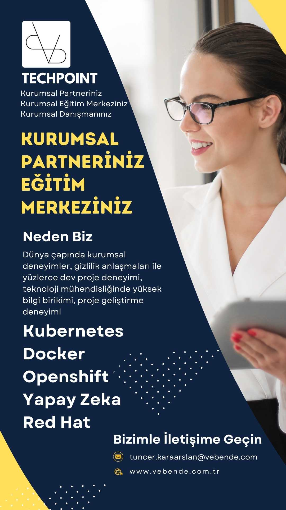
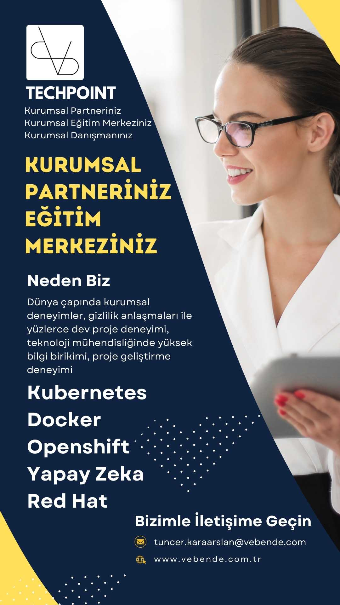

İLETİŞİM
Kurumsal Eğitimlerimiz ve Desteklerimizle Sizin Yanınızdayız
Size Özel Kurumsal Eğitimlerimizle Artık Olmadığı Kadar Güçlüsünüz!
Kubernetes, Red Hat, Openshift, Docker, Yapay Zeka ...
Sizin istediğiniz teknolojilerin eğitimlerini hazırlıyoruz. Ayrıca sizin
projelerinizde sizinle birlikte çalışıyoruz. Bizden eğitim, destek, kurulum, devsecops ve tüm
teknolojik konularda
birlikte çalışmalar talep edebilirsiniz. Bizden teklif isteyin.
2000 yılından günümüze .NET Yetkin İş Ortaklığı, yazılım geliştirme taleplerinizde
davetlerinizi bekliyoruz.
SİZE SÖZÜMÜZ, ARTIK YALNIZ DEĞİLSİNİZ, HER ZAMAN
YANINIZDAYIZ.
Sizinle çalışmak için sabırsızlanıyoruz. Lütfen bizimle Linkedin, E-Posta ya da WhatsApp üzerinden iletişime
geçin.
SİZE SÖZÜMÜZ, ARTIK YALNIZ DEĞİLSİNİZ, HER ZAMAN
YANINIZDAYIZ.
Sizinle çalışmak için sabırsızlanıyoruz. Lütfen bizimle Linkedin, E-Posta ya da WhatsApp üzerinden iletişime
geçin.
Eğitimlerimizi keşfetmeye hazır mısınız? Size piyasadaki yaygın olarak verilen program eğitimleri vermiyoruz. Sizi dinliyor ve size özel eğitim içeriklerini hazırlıyoruz.
5 günlük ve 12 günlük eğitim formatlarımız size farklı konfor ortamları sağlıyor.
Danışmanlık ve gizlilik çerçevesinde kontratlı çalışmalarımız ile teknolojik dönüşümünüzde sizinle birlikte süreçlerinize dahil oluyoruz ve birlikte çalışıyoruz.
Uzmanlarımızın deneyimleri sizin yanınızda. Kurumsal değişiminizde yapacağınız IT yatırımlarınızda sizlere danışmanlık desteği sağlıyoruz. İnşaa edeceğiniz mimaride tüm hands-on scriptlerin üretilmesinde ve kurulumlarda sizlerle birlikte çalışıyoruz. Size uzun yıllar sürecek eğtim, danışmanık ve destek hizmetleri sunuyoruz. Yeni ekip üyelerinizin yetiştirilmesinde sizlere destek oluyoruz.
DANIŞMANLARIMIZ
İki danışman ve 60 yıla yakın deneyim. Dünyadaki pek çok büyük projede ve firmalarda yer almış proje deneyimlerine sahip kurumsal seviyede danışmanlarımız. Projelerinizde birebir iki danışmanımızla da çalışıyorsunuz.


HİZMETLERİMİZ


Kurumsal Danışmanlık, Kurulum, Destek ve Eğitimler
-
# Eğitim Hizmetlerimiz
Günümüzün yeni teknolojileri, mimarileri, kurulması gereken alt yapılar, yeni yazılım geliştirme yöntemleri ... bunlar gibi çok fazla gereksinim artık şirketlerin gereksinimleri haline geldi. Ayrıca günümüzün en büyük sorunlarından siber güvenlik sorunları, bu doğrultuda doğru inşaa edilmesi gereken alt yapılar, yazılım geliştirme süreçleri, devsecops süreçleri ve sürekli eğitimler ile şirketlerinizi güçlendirmeniz gerekiyor. Eğitimlerimiz ile bu süreçte sizlerin yanındayız.
Yeni dünya ve artan etkileşimli web ve mobile projeler. Beraberinde gelen yüksek trafik ve yönetilmesi gereken alt yapı mimarilerinin optimizasyonu ve verimlilik. Kubernetes mimarisi sayesinde kurumunuzun tüm kaynaklarını tek bir mimari üzerinde yönetebilmenizi sağlıyoruz. Red hat, Kubernetes ve Openshift, DevSecOps ve diğer tüm araçlar birbirleriyle uyum içinde çalışacak hale getiriliyor. Alt yapınızdaki tüm kaynakları (disk, cpu, ram, network, gelen talep yönetimi ...) ölçümleyebilmenizi ve yönetebilmenizi sağlayan bir mimari. Multi cluster, multi master, multi worker, multi region ... ülkemizdeki kurumlarımızın artık sahip olması gereken mimarilerdir. Günümüzün ve gelecek yüzyılın Türkiyesi için sahip olmamız gereken alt yapı mimarilerini bizimle gerçekleştirebilirsiniz. Biz her zaman sizin için hazır olacağız. Ekiplerinizi bu mimariyi yönetmeleri için hazırlayacağız. Kurulum destek ve güncellemeler, dökümantasyon ve eğitimler için biz hep yanınızda olacağız.
Hazırladığımız eğitimlerimiz sürekli güncellenmektedir. Eğitimlerimizi sizin kurumsal logolarınız ile hazırlıyoruz. Eğitimlerden önce sizinle yaptığımız toplantılara göre eğitim içeriklerimiz ve senaryolarımız sizin şirketinize göre düzenleniyor. Eğitimlerimizi sizin ekipleriniz ile etkileşimli birlikte kod yazarak ve birlikte senaryolar üreterek işliyoruz. 360 derece bakış açısıyla eğitimler işleniyor. Hatalar ve çözümleri, logların analizleri, sistemin sağlık kontrolleri, paketleme ve yayınlama, kodlama, deneyim ... katılımcılar eğitimdeki ele alınan teknolojilerin her anını yaşıyorlar.
Tüm eğitimlerimiz canlı ve eğitmenler ile birlikte yapılıyor. Uzaktan eğitim ve destek için tüm araçları eğitmenlerimiz sağlıyor. Tüm eğitimlerimiz iki farklı eğitim formatına uygun olarak hazırlanıyor. İki eğitim formatı arasındaki temel fark, kısa olan formatta eğitmen yazar, katılımcılar eğitmenle birlikte yazar. Uzun formatta tüm kodları katılımcılar yazar, eğitmen her bir katılımcı ile birlikte çalışır. Tam etkileşimli bol hands-on (uygulamalı çalışmalar) içeren canlı uzaktan eğitim.
-
# Danışmanlık Hizmetlerimiz
Yerinden ve uzaktan danışmanlık ve destek paketlerimiz. Yanlız değilsiniz, her an size destek oluyoruz. Her zaman yanınızdayız. Partneriniz olarak sizin yaşayabileceğiniz ya da yaşadığınız tüm sorunlarda yardımcı olmak için her zaman yanınızdayız.
Kuracağınız yeni teknolojilerde sizinle birlikte yerinde çalışmalar yapıyoruz. Aylarca sizinle birlikte mesai yapıyoruz. Sizinle kuruma giriyoruz, sizinle yemeğe çıkıyoruz, sizinle mesaiyi bitiriyoruz. Hem de dünyanın neresinde olursanız olun. Sürekli sizin yanınızdayız ve çalışmaları sizinle birlikte yapıyoruz.
Sürekli sizin için bizde arge yapıp deneyimlerimizi arttırıyor, sizin için çalışıyoruz. Biz de her gün kendimizi güncelliyoruz. Sizin senaryolarınız ve sizin teknolojileriniz ya da sahip olmak istediğiniz teknolojilerinizle ilgili içerikler ve kurumsal eğitimleri hazırlıyoruz. Sizin projelerinizde bizler yer alıyor ve sizlere uzun yıllar sürecek iş planlarımız ile tam destek veriyoruz.
-
# Kontrat Hizmetlerimiz
Tam gizlilik kapsamında tümüyle sizin içinizde sizin için çalışıyoruz. Tam mesai yapıyor ve aylarca süren çalışmalarda sizin ekibinizdeki personel olarak görev alıyoruz.
Kuracağınız yeni teknolojilerde sizinle birlikte toplantılara katılıyor, deneyimlerimiz ve bilgimizle karar almanıza yardımcı oluyoruz. Bu süre içinde tümüyle size atanmış kaynaklarımız sizin projenizde danışmanlık, hands-on üretimi, kurulum, teknik dökümantasyon ve eğitim hizmetlerini sunmaktadır.
Kontrat hizmetleri kapsamında bu hizmeti referans olarak kullanmıyoruz.
-
# Yazılım Hizmetlerimiz
2000 yılından günümüze .NET Yetkin İş Ortağı olarak ülkemizde ve dünya çapında yüzlerce büyük proje deneyimine sahibiz.
Kurumunuzun yazılım projelerinde yer almak isteriz. Geliştirme yetkinliklerimiz içinde kendi içimizdeki DevSecOps süreçlerine uygun yazılımlar geliştiriyoruz. Ürün teslimatlarında sizin bildirdiğiniz repolar üzerinden teslimatlar yapıyoruz. Teknik döküman, eğitim, kullanım kitapları ve destek araçları hazırlıyoruz.
EĞİTİMLERİMİZ
Unutmayın, tüm eğtim danışmanlık ve partnerlik hizmetlerimizi size özel hazırlıyoruz.
-
# Kubernetes: Modern Altyapılarınız İçin Güçlü ve Kalıcı Çözümler
🔹 Kurumsal Kubernetes Kurulumlarında Güçlü Destek: Altyapınızı bir adım öteye taşımak için yanınızdayız! Kurumsal Kubernetes kurulumlarınızda her aşamada size rehberlik ediyor, güvenli ve ölçeklenebilir çözümler sunuyoruz. İş süreçlerinizin verimliliğini artırın, geleceğe sağlam adımlarla ilerleyin.
🔹 Özel Eğitim Programları: Ekiplerinizin Yetkinliklerini Zirveye Taşıyın! Sistem, güvenlik ve yazılım ekiplerinize özel eğitimlerle, iş gücünüzü güçlendiriyoruz. Teorik bilgiden çok, gerçek dünyada uygulamaya dayalı, size özel içerikler sunuyoruz. Bu eğitimlerle, ekipleriniz sadece bilgi edinmekle kalmaz, sahada daha etkili olur ve daha hızlı çözümler üretir.
🔹 Uygulamalı Hands-on Çalışmalar: Pratik deneyimlerle altyapınızın yönetimini daha verimli hale getirin! Kubernetes hands-on ve Docker hands-on eğitimlerimizle, uygulamalı çalışmalar sayesinde gelişmiş beceriler kazanabilir, operasyonel süreçlerinizi profesyonel bir düzeye taşıyabilirsiniz. Zorluklarla başa çıkmanın ve altyapınızı en üst seviyede yönetmenin yolunu öğrenin.
🔹 Güvenli ve Güçlü Yönetim Çözümleri: Bakım ve yönetim süreçlerinizdeki tüm zorlukları aşmak için bizimle çalışın. Kubernetes altyapınızı her zaman güvende tutun ve operasyonel verimliliğinizi artırarak rekabet avantajı kazanın.
🔹 Neden Bizi Tercih Etmelisiniz? Kubernetes altyapınız için güçlü bir iş ortağı arıyorsanız, doğru yerdesiniz! Dünyanın en güçlü kurumsal işletim sistemlerinde uzman kadromuzla yanınızda olup, sizi geleceğe taşırız. Bugünden itibaren daha güçlü bir altyapı, daha güvenli bir iş süreçleri için bizimle adım atın. Hemen bize katılın ve farkı yaşayın! 🚀
-
# Red Hat: Güçlü Altyapılar İçin İleri Seviye Eğitim ve Destek
🔹 Red Hat altyapınız için tüm seviyelerde uygulamalı çalışmalar ve kurumsal eğitim içeriklerimizle yanınızdayız. Deneyimli eğitmenlerimizle, Red Hat sistemlerinizi daha verimli yönetmek için pratik bilgilerle donanmış, derinlemesine eğitimler alabilirsiniz.
🔹 İhtiyaçlarınıza özel Docker hands-on ve Kubernetes hands-on eğitimleriyle, modern container çözümleri hakkında uzmanlık kazanabilir, Red Hat kurumsal altyapınızı en üst düzeye taşıyabilirsiniz. Her seviyede eğitim programlarımızla, ekiplerinizin becerilerini güçlendiriyor ve size özel çözümler sunuyoruz.
🔹 Red Hat sistemleri ile iş süreçlerinizi hızlandırın, güvenli ve yüksek performanslı altyapılar kurun! Sizi bekliyoruz.
-
# DevSecOps
🚀 Geliştirme, Güvenlik ve Operasyon artık bir arada, hem de Kubernetes mimarisi üzerinde! 🌐
⚙️ İleri seviye DevOps konuları ve onlarca araç ile yüzleşin. Zor ama etkileyici bir yolculuk. 🚧 Eğitimi ve uygulaması zorlu olabilir, ancak doğru mentorluk ile şirketinize katacağı değer, hayal ettiğinizden bile büyük! 💡
-
# Yapay Zeka 🚀
🌟 Kurumsal yapay zeka iş modelleri ve uçtan uca tam otomasyon süreçleriyle işlerinizde ölçülebilir kalite ve hız farkı yaratıyoruz.
📠Her seviyeye uygun özel eğitimler ve etkili seminerlerle kurumsal farkındalığınızı artırmaya yardımcı oluyoruz.
-
# Proje Yönetimi Yöntemleri 🚀
Tüm proje yönetimi yaklaşımları birbirinden değerli olup, birisi diğerinin yerine geçemez. Her biri, belirli bir sorunun çözümü için geliştirilmiştir.
- âœ”ï¸ Agile: Esneklik ve hızlı adaptasyon üzerine kurulu.
- âœ”ï¸ DevOps: Geliştirme ve operasyon süreçlerini birleştiren modern bir yaklaşım.
- âœ”ï¸ Future Driven Development: Geleceği şekillendiren yenilikçi yöntemler.
- âœ”ï¸ Validation & Verification - V Model: Doğrulama ve geçerleme üzerine kurulu sistematik proje yönetimi.
- âœ”ï¸ RAD: Hızlı uygulama geliştirme odaklı bir yöntem.
-
# Enerji Sektörü Özel Eğitimi 🔌
🚀 Sizin sorunlarınızı biliyoruz. Size özel, sektöre uyumlu eğitim içeriklerimiz ile yanınızdayız!
🌟 Binlerce, yüzbinlerce ve hatta milyonlarca sayacı gerçek zamanlı yönetecek handend sistemlerinizi nasıl geliştirmeniz gerektiğini biliyoruz.
🌠Sahadaki tüm online cihazlarla kusursuz bir iletişim altyapısı kurmanız için gereken adımları paylaşıyoruz.
📊 Devasa boyuttaki günlük verileri işleyerek doğru kararlar almanız için en iyi yöntemleri sunuyoruz.
ğŸ› ï¸ Sizin için en uygun çözümleri özel olarak tasarlıyoruz.
🔑 Eğer enerji sektöründe karar verici bir teknoloji lideriyseniz, hemen bizimle iletişime geçin. Şirketinize güç katın, sektörün geleceğine yön verin!
-
# Microservis Mimarilerinde Yazılım Geliştirme ve Yönetimi
Microservis teknolojilerini aşağıdaki diller ile nasıl geliştirebileceğinizi öğrenin:
-
 Go: Performans odaklı microservisler geliştirme
Go: Performans odaklı microservisler geliştirme
-
 Python: Hızlı prototipleme ve veri odaklı servisler
Python: Hızlı prototipleme ve veri odaklı servisler
- C# .NET: Kurumsal uygulamalar için sağlam çözümler
- Java Spring: Geniş ölçekli sistemlerde güvenilirlik
-
-
# İleri Seviye Siber Güvenlik Eğitimleri 🔒
Tüm kurum çalışanları için temel güvenlik farkındalığı
Güvenlik Uzmanları ve Sistem Mimarları için ileri teknikler
Yöneticiler için stratejik güvenlik yönetimi
-
# Yapay Zeka Destekli Müşteri Deneyimi Geliştirme
KVKK GDPR uyumlu yapay zeka geliştirme
Microservisler ile uyum içinde müşteri temsilcileri ile yapay zeka destekli müşteri deneyimi
-
# NLP ile sohbet botları
Whatsapp ile entegre kişiye özel kurumsal asistanlar
Kişiye özel ürün kataloglarının üretilmesi ve tek tek müşteriye özel online pdf üretimi, gönderimi ve müşteri iletişimlerinin yönetilmesi
Sesten metine işleme ve sorguların kurumsal kaynaklarda işlenmesi ve sonuçların müşteriye iletilmesi
Sürekli öğrenme ile uzmanlık ve kurumsal zekanın üretilmesi
Yöneticilerin günlük raporlarının hazırlanması
Günlük yapılması gerekli işlerin planlanması icra edilmesi ya da yapılan görevlerin kontrol edilip raporlanması
Güvenlik konusunda izleme, analiz etme ve raporlama yeteneklerinin geliştirilmesi
Kurumsal olarak sizlerin hikayelerinize uygun ai çözümlerinin üretilmesi, eğitimi ve işletilmesi desteği
-
# Yapay Zeka Destekli İnsan Kaynakları Çözümleri
İşe alım süreçlerinde dönüşüm
Çalışan performansları ve yetkinliklerin optimizasyonu
Etik veri güvenliği
Kritik pozisyon analizi ve kurum içi çalışanların kurumsal analizi, eğitim planlanması, yetkinlik geliştirme
-
# Akıllı Şehir Yönetimi ve Planlamada Yapay Zeka
Ulaşım ve Trafik Yönetimi
Akıllı Aydınlatma Yönetimi
Akıllı Tarihi Şehir
Akıllı Su Yönetimi
Veriye Dayalı Alt Yapı Planlaması
Akıllı Sağlık İzleme Sistemi
Anketler ve Yapay Zeka Yaklaşımları ile Planlama
Buradaki tüm içerikler Vebende A.Ş. ticari içerikleri olarak
üretilmekte ve kurumsal eğitim ve destek paketleri olarak sunulmaktadır.
Tüm içerikler
Tuncer KARAARSLAN tarafından hazırlanmıştır.
İçerikler dünyanın en büyük
firmalarındaki deneyimleri altında hazırlanmış ve saha deneyimi içeren içeriklerdir.
Tüm eğitim
içeriklerimiz github repolarda üretilmekte, eğitmen içerikleri de github repolarda saklanmaktadır.
Eğitim sırasında tüm içerikler bir kopyası (fork) alınarak katılımcılara açılmakta ve katılımcılara
yüzlerce hands-on (uygulamalı çalışmalar) çalışma hayat boyu erişime açılmaktadır. Hem de eğitim ve
çalışmalarda eğitmenle
birlikte alınan tüm özel notlarıyla birlikte.
Zaman ayırdığınız için teşekkürler